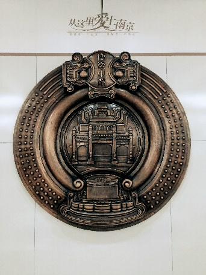
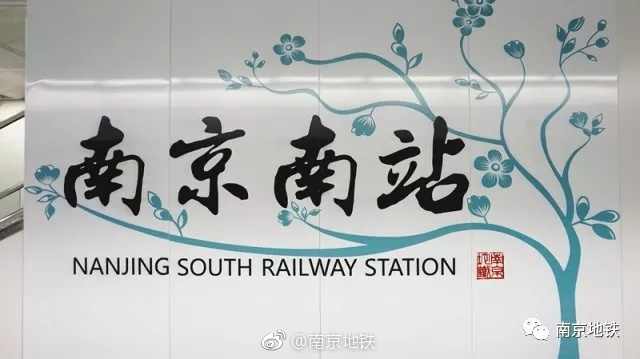

南京南站・博爱车站
|
地铁南京南站于2011年6月28日开通，该站站厅层有一面20多米长的“爱墙”，成为南京新符号。爱墙上，书写着4000多人对于爱的感悟，这在国内还是首创。 |
“爱墙”设置在地铁南京南站地下一层的站厅，长21.6米，高3米，离地0.6米，用10厘米厚的白色大理石制成。征集来的“爱的箴言”，依照原字迹逐一铭刻在大理石上，从远处看，这些爱的字迹将构成六幅“爱的手势”。这一爱墙将作为地铁南京南站的标志性艺术品，永久性展示。在这面爱墙上，除了字体各异的中文外，还有很多外国友人的手迹，甚至还有盲文、少数民族文和英文。
除了“爱墙”，整个站厅层共悬挂了22块内容各异的圆形紫铜浮雕，内容包括“金陵十二景”等。一个车站，浓缩了城市的历史。  |
地理位置
 |